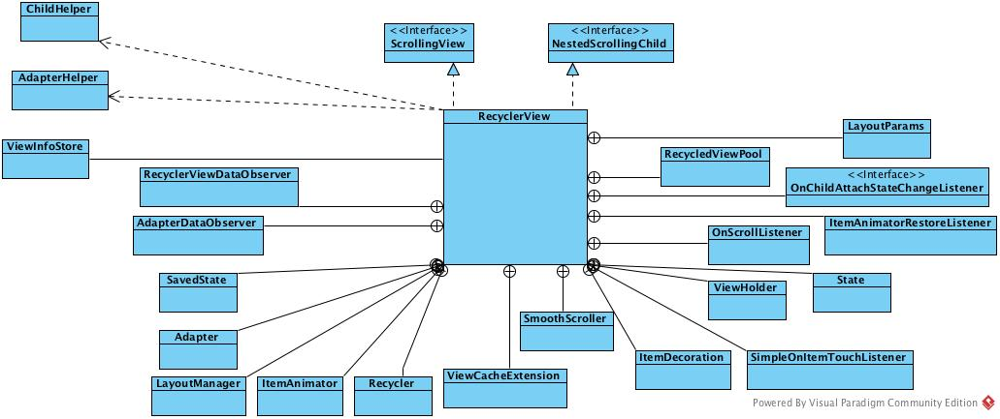

本系列主要分析RecyclerView的源码。本文主要分析RecyclerView的源码结构，以及其各机构的作用。首先来看一下RecyclerView的源码结构:

从图上可以看出RecyclerView依赖了很多别的类。接下来我们首先介绍各个类的作用。
- RecyclerViewDataObserver 数据观察器
- Recycler View循环复用系统，核心部件
- SavedState RecyclerView状态
- AdapterHelper 适配器更新
- ChildHelper 管理子View
- ViewInfoStore 存储子VIEW的动画信息
- Adapter 数据适配器
- LayoutManager 负责子VIEW的布局，核心部件
- ItemAnimator Item动画
- ViewFlinger 快速滑动管理
- NestedScrollingChildHelper 管理子VIEW嵌套滑动
###创建布局管理器
如果在布局文件里面设置了布局管理器的类型，那么这里会通过反射的方式实例化出对应的布局管理器。最后将实例化出的布局管理器设置到当前的RecyclerView
###设置布局管理器
设置布局管理器之前会先清空所有之前的缓存VIEW。最后通知VIEW刷新
###onMeasure
onMeasure这个回调方法用于测量VIEW的大小
从上述代码可以看出，
- 如果布局是空的，那么
RecyclerView会创建调用defaultOnMeasure方法
默认测量是布局管理器根据指定的宽，高规格，算出宽高。
- 如果是自动布局，如果宽高都是明确指定的，那么跳过测量。否则，如果
- 目前是初始阶段，那么调用
dispatchLayoutStep1
- 第二步，用老的尺寸规格来预布局，然后调用
dispatchLayoutStep2
- 这之后我们就能够获取子
VIEW的宽高了。如果RecyclerView没有明确的宽高，那么我们需要再次测量，然后重复上述步骤。 - 如果不是自动布局，如果是固定大小，那么直接用现有规格测量。否则首先进行一些动画前置操作，最后依然由布局管理器来测量。
###onLayoutonLayout是确定位置时的回调方法。
dispatchLayout
- 如果是初始状态，调用
dispatchLayoutStep1，测量，调用dispatchLayoutStep2。如果高度或宽度发生变化，测量，调用dispatchLayoutStep2。其他情况制作测量。最后统一调用dispatchLayoutStep3主要处理动画。
###onDrawonDraw是绘制时的回调
主要对ItemDecoration的绘制
至此，RecyclerView的主要回调方法已经简单介绍完毕。